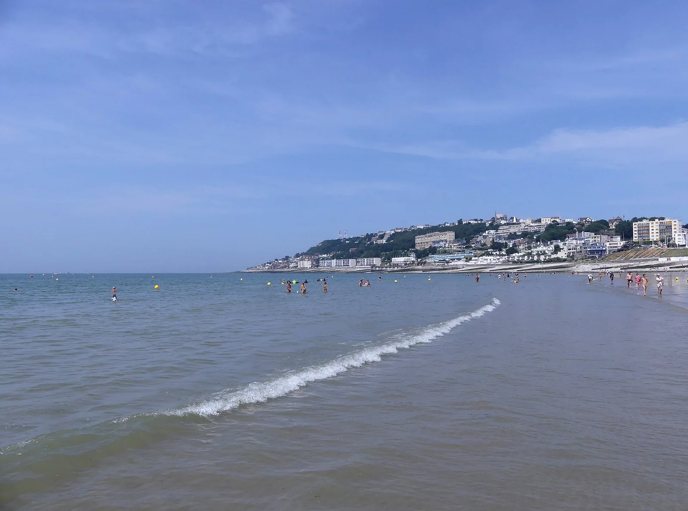

Le Havre — Plage
Seine-Maritime, France · kitesurf, surf, bodyboard

Plage de galets en plein cœur de la ville, spot de kite réputé et petites vagues par houle de sud-ouest.
- Lieu
- Seine-Maritime, France
- Niveau
- Intermédiaire
- Activités
- kitesurf, surf, bodyboard
- Type d'eau
- Mer / océan
- Coordonnées
- 49.49, 0.10 (position approximative du secteur)
Dangers à connaître
- Galets : chaussons conseillés.
- Proximité de l'entrée du port.
Le conseil d'Ocean Buddy
Galets glissants : protège tes pieds à l'entrée.
Ouvrir dans Ocean Buddy Télécharger sur l'App Store
Source : Description historique Ocean Buddy · vérification externe en attente.